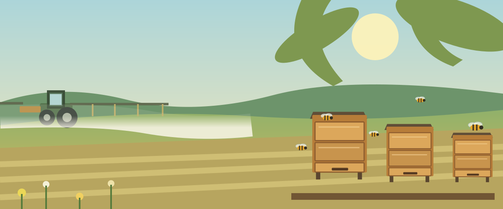
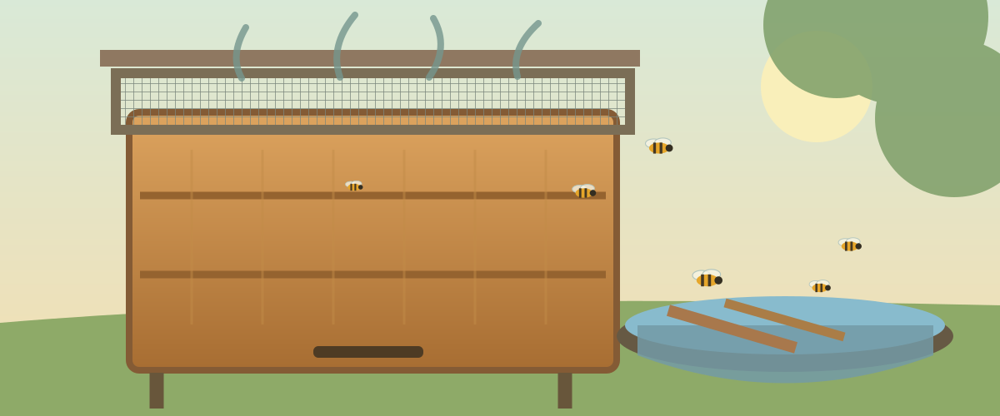

В пчеловодческом сообществе обсуждают проект санитарных правил, в котором затрагиваются вопросы применения пестицидов и защиты пчёл. Спор вызывает формулировка об исключении вылета пчёл на опасный период.
О чём именно спор?
Это не совершенно новая норма. Сходная формулировка уже есть в пункте 272 действующего СанПиН 2.1.3684-21: организация, проводящая обработку, должна информировать владельцев пасек о необходимости исключения вылета пчёл ранее срока, указанного в регламенте применения пестицида.
Одновременно статья 16 Федерального закона № 490-ФЗ «О пчеловодстве» требует указывать в уведомлении рекомендуемые сроки изоляции пчёл в ульях. Из закона не следует универсальное требование закрывать все ульи на несколько суток при любой обработке.
Пчеловоды опасаются, что неоднозначные формулировки могут приводить к спорным толкованиям ответственности и не учитывать риски самой изоляции. Вместе с тем у проводящих обработки хозяйств есть собственные обязанности по безопасному применению препаратов и информированию.
Что произошло на пасеке «Хуторок»
В 2026 году пчеловод из Самарской области во время обработок полей вокруг села изолировал на несколько дней часть своих пчелосемей. Верх и низ ульев были закрыты вентиляционными сетками, над гнёздами были установлены пустые магазины, а в кормушки налита вода. Крышки слегка сдвинули для выхода воздуха.
Две пчелосемьи погибли. Владелец считает наиболее вероятной причиной запаривание при длительной изоляции. Воды на несколько дней не хватило, верхний вентиляционный зазор мог быть недостаточным. Оставленные между корпусами ганемановские решётки тоже могли создавать дополнительное сопротивление движению воздуха.
«Я закрывал пчёл, чтобы уберечь их от химических обработок. Теперь понимаю, насколько опасной может оказаться многосуточная изоляция даже в ульях с вентиляционными сетками и запасом воды».
Это личный практический опыт, а не подтверждённое лабораторией установление причины гибели. Нельзя по одному случаю доказать, какой именно фактор оказался решающим. Но он показывает серьёзную дилемму: ограничение вылета ради защиты от пестицидов само может стать опасным, особенно в жаркую погоду и для сильных семей.

Как устроено уведомление об обработках?
По статье 16 закона № 490-ФЗ (редакция, действующая с марта 2026 года) организаторы обработок, как правило, сообщают о планируемом применении пестицидов пчеловодам на расстоянии до 7 километров от обрабатываемых земель не ранее чем за 10 и не позднее чем за 5 календарных дней. Для отдельных случаев, связанных с чрезвычайными ситуациями, действует особый порядок.
В уведомлении среди прочего указывают место, сроки, используемые препараты и рекомендуемые сроки изоляции пчёл. Конкретные ограничения следует оценивать с учётом применяемого препарата и условий обработки.
Оповещение само по себе не устраняет всех рисков. Владельцам пасек важно заранее понимать, какой препарат используется, когда опасность заканчивается и как избежать гибели пчёл как от отравления, так и от перегрева.
Обсуждение и голосование
Первоначальное обращение пчеловодов предлагало ставить отметку «не поддерживаю» на странице проекта. Однако голосование на портале и официальная процедура подачи замечаний — не одно и то же. Значимость оценок, поставленных после завершения установленного периода обсуждения, не подтверждена. Поэтому мы не призываем к запоздалому голосованию, а даём ссылку на первоначальный проект для самостоятельного ознакомления и проверки его актуального статуса.
Почему стоит обсуждать эту тему?
Пчеловодам и сельхозпроизводителям выгоднее сотрудничать, чем спорить уже после потравы или гибели семей. Своевременное и точное оповещение, выбор безопасных способов обработки и обмен реальным опытом помогают предотвращать потери.
На дату публикации мы рассматриваем проект изменений и действующие нормы, а не сообщаем о вступлении нового СанПиНа в силу.
Документы и источники
- Проект на портале regulation.gov.ru — официальная карточка, документы и текущий статус.
- Действующий СанПиН 2.1.3684-21, пункт 272 — формулировка об информировании владельцев пасек.
- Федеральный закон № 490-ФЗ, статья 16 — уведомления об обработках.
- Разъяснения Россельхознадзора от 27 марта 2026 года — взаимодействие пчеловодов и аграриев.